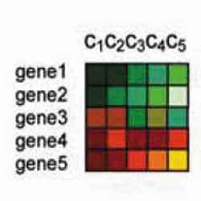
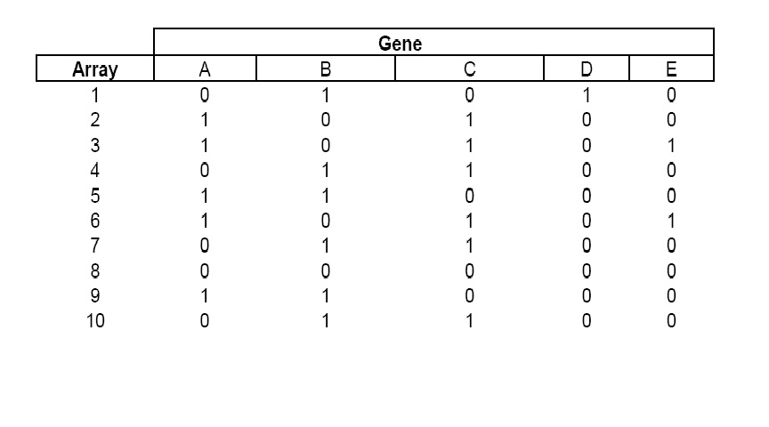
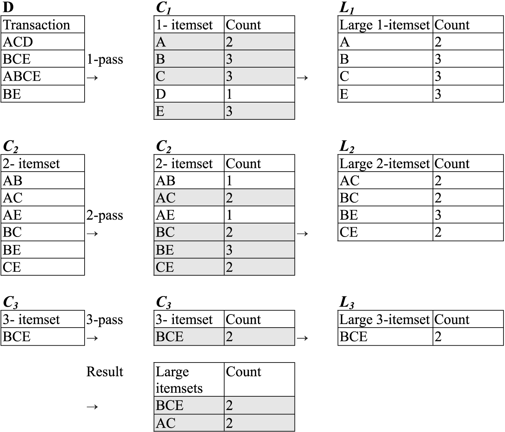

Shankar Jagadeesan
Teaching machines to see and respond

Micro array data analysis for Gene Expression
Gene expression is a process by which gene information is used in synthesizing a product of that gene. In simple words active genes are the ones which are expressed nicely in a genome or micro array data set. DNA micro array data from a DNA chip is given as the input. This data set can be considered as a matrix of elements with probs along the rows and marks along the columns.
|  |
| Illustration of Micro array data set |
{kind=link}
How it is done?
In other words a prob can be considered as a particular gene and the marks are different samples of that gene. The data set given here is a perfect micro array dataset obtained from cistrack database, which is maintained by the national center of data mining, UIC. An exploratory analysis of the data set is done. Using the arules package in R the frequent item sets are obtained. We look out for the combination of such marks all over the probes to get a biological information of the pattern. Apriori algorithm is used as a main tool for the boolean association rules in the above process.
Association rules
Widely used in the area of �market basket analysis�, association rules take the form of LHS-->RHS where RHS and LHS are both sets with RHS likely to occur whenever LHS occurs. For example, a stores sales database can be mined looking for relationships for what people buy when they also purchase milk. Association rules such as {Milk}-->{Cereal, Biscuict} and {Milk}-->{Biscuit, Maple Syrup} may be uncovered. Such obvious associations are not necessarily very useful or insightful but by altering user defined settings, not so obvious associations may be realized. Instead of looking at contents of shopping carts, as with market basket analysis, we can look at relationships between genes in microarray experiments; treat the genes as the �items� and the arrays as the �transactions�.
|  |  |
| Discretized data | Apriori Example |
{kind=link}
{kind=link}